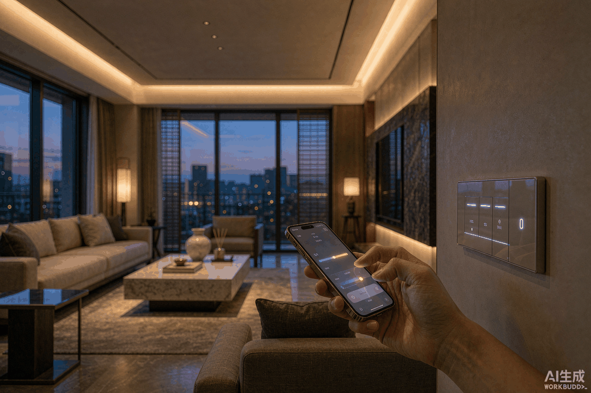
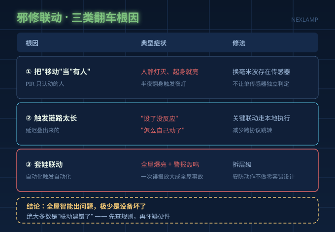
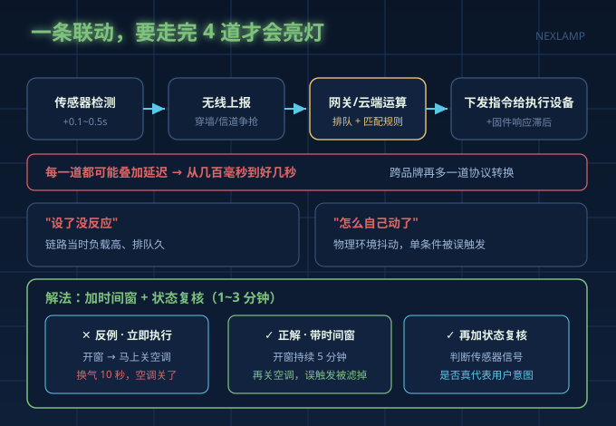
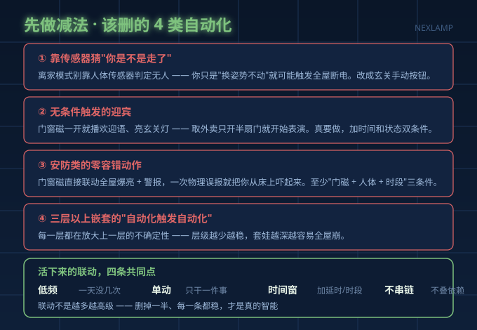

引言
国庆 8 天假是玩家集中折腾全屋联动的窗口，但就在放假前夜，微博话题 #智能家居的邪修联动# 冲上 1839 赞、1124 条评论，几乎全是翻车现场：有人取外卖回来灯闪音乐响，"外卖小哥看我的眼神像看神经病"；有人设了防盗联动，半夜全屋灯拉满加警报，自己被吓得心脏骤停。
把上百条评论对完账，结论很反直觉：全屋智能出问题，极少是设备坏了，绝大多数是"联动建错了"。 这篇不讲买什么单品，只讲"建联动"本身怎么做才不会把自己搞崩。
一、邪修联动是怎么把你搞崩的？三类根因

根因一：把"检测到移动"当成了"有人"
这是翻车重灾区。传统红外（PIR）人体传感器只认"移动的热源"——你坐着看书、躺着刷手机，只要不动，它立刻判定"无人"，灯啪一下就灭；抬个手它又亮了。反过来它又"太看得见"：宠物走动、窗帘摆动、空调热风扫过都可能被当成"有人移动"。传感器没错，错在你让它单独决定"屋里到底有没有人"。 要真判断"人在"，得上毫米波雷达型的存在传感器，而不是给一个只会看移动的传感器配一堆越狱式规则。
根因二：触发链路比你想象的长，"时灵时不灵"是延迟叠出来的
一条联动从触发到执行要过好几道：传感器检测 → 无线上报 → 网关本地匹配或云端运算 → 下发指令。每一道都可能叠加穿墙干扰、信道争抢、云端排队、固件滞后，延迟从几百毫秒到好几秒不等。所以"设了没反应"和"怎么自己动了"，往往是同一条链路在不同负载下的两种表现，不是规则写错了。

根因三：套娃联动，把一次误报放大成全屋事故
邪修玩家最爱"自动化触发自动化"：一个状态判断套进另一个场景，再串进离家模式。层级一多，任何一环的误报都会被沿着链条放大。门窗磁被关门震动轻轻触发一次，就可能一路串到"防盗警报 + 全屋爆亮"。问题不在传感器坏了，在于你把安防类动作的容错设计成了零。
| 根因 | 典型症状 | 真实代价 | 修法 |
|---|---|---|---|
| 把"移动"当"有人" | 人静灯灭、起身就亮、半夜翻身亮灯 | 失眠、反复手动开灯 | 换存在传感器；不让单传感器独立判定 |
| 触发链路长、延迟叠加 | "设了没反应""怎么自己动了" | 体验崩坏，误以为设备坏 | 关键联动走本地执行；减少跨协议跳转 |
| 套娃联动放大误报 | 全屋爆亮、警报轰鸣、空调开了又关 | 社死、受惊、能耗浪费 | 拆层级；安防动作不做零容错设计 |
二、建联动之前先做减法：这 4 类自动化建议直接删

大部分人的问题不是联动太少，而是太多。先把这几类删掉：
- 靠传感器猜"你是不是走了"的自动化。 离家模式如果靠人体传感器判断无人触发，你只是"换姿势不动"就可能触发全屋断电。改成玄关一个手动按钮，踏实一万倍。
- 无条件触发的迎宾。 门窗磁一开就播欢迎语、亮玄关灯——取个外卖只开半扇门就开始表演，社死现场。真要做，就加时间和状态双重条件。
- 安防类的零容错动作。 门窗磁直接联动全屋爆亮加警报，一次物理误报就能把你从床上吓起来。安防联动至少要"门磁 + 人体 + 时段"三条件同时成立。
- 三层以上嵌套的"自动化触发自动化"。 每一层都在放大上一层的不确定性，层级越少越稳。
三、活下来的联动，都有四条共同点
把被收藏最多的那批联动摆在一起看，幸存者高度一致：低频、单动、带时间窗、不串链。
| 法则 | 含义 | 例子 |
|---|---|---|
| 低频 | 一天触发次数少，不值得为它冒险 | 起夜微光，只在深夜触发 |
| 单动 | 一个触发源只干一件事，不打包 | 离家按钮只负责关灯关空调 |
| 带时间窗 | 加延时或时段限制，过滤抖动 | "开窗持续 5 分钟后再关空调" |
| 不串链 | 不把 A 场景的成败当作 B 场景的前提 | 别让"离家模式"再触发"安防布防" |
三个真正能照抄的作业：离家一键（手动触发 + 顺序执行，先关灯再放扫地机，不然机器人会被突然熄灭的灯困住）；起夜微光（仅限深夜时段 + 低亮度 + 只照动线，绝不碰主灯）；睡眠渐进（把灯缓缓熄到 1% 再关，而不是一键断电，不被突然的黑暗吓到）。
四、硬件兜底：灯和开关要满足三个条件
联动设计得再好，硬件不给力照样白搭。选灯和驱动盯三点：
- 本地执行能力。 断网后基础开关和调光要照常可用，不能一离线全家"裸奔"，连排查入口都没有。
- 调光协议兼容。 买之前确认灯具、驱动、开关、面板是不是同一调光体系。调光协议不兼容，是所有灯光翻车的头号原因。
- 驱动本身的质量。 联动再丝滑，驱动纹波大、调光不顺、低亮闪烁，体验照样垮。驱动选对了，整个系统的下限才守得住。
常见问题
Q：我联动设得不多，为什么还是会误触发？ 看触发源是不是单条件。只要一条联动是"某个传感器信号 → 立刻执行动作"，就一定会被物理环境误触发。加 1～3 分钟延时和状态复核，响应慢几十秒，换的是长期稳定。
Q：全屋智能是不是设备越多越好？ 恰恰相反。有从业者记录过真实案例：客户 15 万装了全套，一年后主动砍掉次卧、儿童房、老人房，只留主卧和客厅，总价降到 6 万，体验反而提升。堆到一定密度后，每多一台设备就多一个要维护的故障点。
总结
全屋智能翻车，排在前面的从来不是"品牌之争"，而是决策流程错了：零线没确认、为"全屋"而全屋、生态和手机不匹配、网络没规划。落到灯光这条线上，最该记住的一句是——先想清楚哪些动作该由人自己按，剩下的再交给自动化。 联动不是越多越高级，删掉一半、每一条都稳，才是真的智能。